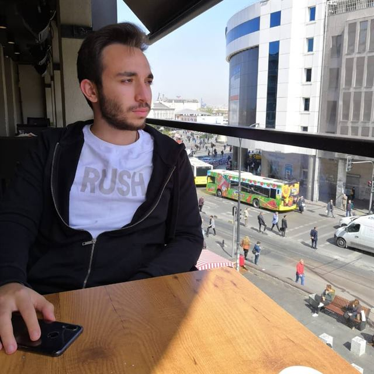

Adım Mahmut.Soyadım Öksüz.2000 yılı mayıs ayının 24 ünde dünyaya geldim.Şeklinde başlayıp kendimi tamamen anlatıp ne sizi sıkayım ne de kendimi.
Asıl konumuz olan "ben"e dönelim. "Ben-öteki" ilişkisi, ilk bakışta basit ve sıradan bir ilişki gibi görünse de detaylı düşünüldüğünde bunun öyle olmadığı, ilişkinin çok yönlü olduğu söylenebilir. Bu ilişkinin bir sonucu olarak, benim kendimi bir başkasında fark ettiğimi ve açığa çıkardığı gibi bir başkası da kendini bende fark etmektedir. Ben-öteki ilişkisinin bize verdiği en önemli şey insanların birbirinde kendini bulmasıdır. Ben bir başkasının kendi olmasına sebebiyet verirken benim de ben olmama başkaları sebep olur. Bu yüzden çok değerlidir kendinizde bişeyler bulduğunuz insanlar. Bu yüzden genellikle çevremizde ortak yönlerimizin olduğu arkadaşları barındırırız. Atalarımız da zamanında farketmiş ki bu olayı şöyle bir söz söylemişler "Arkadaşını söyle sana kim olduğunu söyleyeyim.".
